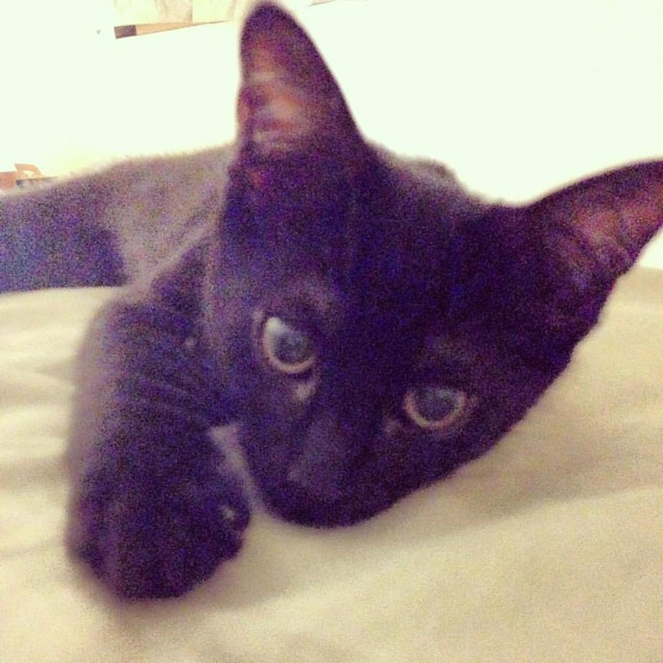

Boredom is okay!
If you are bored, you have come to the right place! We do not know why this exists, but it was made of boredom (and because we need marks). This apparently needs to be at least five hundred words long so I guess that’s what we’ll try to do… How in Hell are we going to do this? I could just copy and paste some lyrics but that would make this the LAZINESS page because then I would have site it. I could save time by just copying something and spend more time making the page better but… boredom. So, here we are… I’m rambling… okay… well, we have a PUN on the bottom of the page with the lame excuse of a footer… I need to still make a header… dang… I’m listening to music while doing this. I’m listening to “Problem” by Arianna Grande. I don’t even like the song and yet I keep watching stuff about her. I don’t care she licked a donut but I do for some reason… now I want a donut… and everything is closed so I don’t know what to do. I haven’t even eaten breakfast… I’m not hungry either though so I guess that’s okay. Oh! Now it’s “Lucky” by Brittany Spears! Yay! No one seems to know that song but it’s good!... You gues want to see a picture of my cat? Look here one second...

His name is Freddy after Freddy Fazbear from Five Nights at Freddy’s! His middle name, Kira, is from Death Note. I liked Ryuk but nope, we had to name him something else. We also got him on Friday the 13th which is awesome because he’s a black cat. But he has black stripes too!.. This may be random but is anyone else excited for Finding Dory? The incredibles 2? I remember as a kid, my teacher in the 3rd grade had told me only what movie we were going to watch and it was Incredibles. That’s how long we had to wait for that movie?! Wow…. Why do we even bother? Hopefully it’ll be worth waiting for… I even saw Nemo when it came out in theatres. It was great and I didn’t know Ellen played Dory and now I have a friend who actually went on the show. She wrote a letter to her and she gave her a lot of moolah for school, then she was on the show and she got even more, then the school she wanted to go to gave her even more money even though she wasn’t accepted yet and now she is and she’s there…
So, anyway, just as I’m bored, I’m sure you’ll find something or other here to cure your boredom.